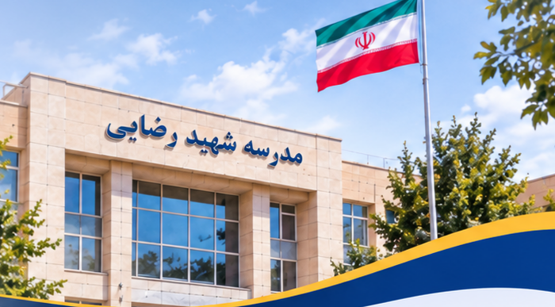

تقویت روحیه همکاری
ایجاد فضای صمیمیتر و افزایش مشارکت دانشآموزان در فعالیتهای مدرسه.
با تجربه حضور در شورای دانشآموزی در سال گذشته، برای خدمترسانی بهتر و ساختن مدرسهای پویاتر در کنار شما هستم.
مشاهده برنامههای من ←
هدف من پیگیری مسائل واقعی دانشآموزان و تلاش برای اجرای پیشنهادهای کاربردی است.
ایجاد فضای صمیمیتر و افزایش مشارکت دانشآموزان در فعالیتهای مدرسه.
پیگیری برگزاری مسابقات علمی، فرهنگی و ورزشی با مشارکت کلاسها.
شناسایی کمبودها و انتقال منظم آنها به مسئولان مدرسه برای پیگیری.
جمعآوری نظرات دانشآموزان و پیگیری پیشنهادهای قابل اجرا.
تلاش برای برگزاری برنامههای فرهنگی و مناسبتی با مشارکت دانشآموزان.
انتقال مشکلات مطرحشده از سوی دانشآموزان و دنبال کردن نتیجه آنها.

من علی درگاه قلی پور هستم؛ دانشآموز مدرسه شهید رضایی. سال گذشته نیز افتخار عضویت در شورای دانشآموزی این مدرسه را داشتم و در این مدت با مسائل، نیازها و دغدغههای دانشآموزان بیشتر آشنا شدم.
امسال با تجربهای بیشتر و شناخت بهتر از فضای مدرسه، قصد دارم پیگیر برنامهها و درخواستهای دانشآموزان باشم.
من آماده شنیدن نظرات و پیگیری دغدغههای شما هستم.
برنامههای انتخاباتی من